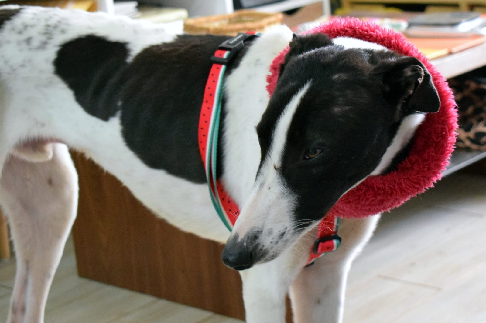

Luciano
- Edad: 10 meses
- Sexo: Macho
- Talla: Mediana
- Ubicación: Hogar temporal
Luciano es alegre y muy amoroso. Está a salvo en hogar temporal y busca una familia. Fue rescatado junto a Fito en Peralillo, donde los abandonaron. Fue un rescate de emergencia justo antes del temporal.
Quiero adoptar a Luciano